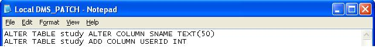

Installation Diagnostic Tool 5.4.2
From ICISWiki
Application Programs 5.4 > Installation Diagnostic Tool 5.4 MAIN > Installation Diagnostic Tool 5.4.2
Introduction
The ICIS Installation Diagnostic Tool is an application that tests the different components of your ICIS installation to determine the cause of error situations. This is useful in troubleshooting when your ICIS application is not functioning properly.
Just choose the test(s) you want to execute and click on the "Run" button.
Configuration Test
(Can be used on datasources associated with different database backends (MS Access,MySQL, PostgreSQL))
If you choose to execute the Configuration Test, the application will show you the result similar to the following:
----------------------------------- System Configuration ----------------------------------- Operating System: MSWinXP Workstation Ver.5.1 Service Pack 2 (Build 2600) ICIS ODBC settings: Central GMS: Microsoft Access Driver (*.mdb) (OK) Local GMS: Microsoft Access Driver (*.mdb) (OK) Central DMS: Microsoft Access Driver (*.mdb) (OK) Local DMS: Microsoft Access Driver (*.mdb) (OK)
ICIS module versions: icis32.dll: Thursday, February 10, 2005 10:46:11 AM (5.0.0.0) Browse.exe: Friday, May 20, 2005 11:13:52 AM (Unknown) GMSSrch.exe: Thursday, August 04, 2005 4:07:27 PM (5.2.0.0) SetGen.exe: Tuesday, July 26, 2005 3:35:47 PM (5.1.0.3) InTrack.exe: Friday, July 29, 2005 3:27:00 PM (5.2.0.0) DMSWRBK.XLA: Wednesday, February 02, 2005 11:06:52 AM (Unknown)
Features
- Option to specify which data source name(s) to test
- Checking for existence of required resource files (LAUNCHER.TXT, ICIS32.DLL). Error-0009
- Checking for existence of data source name specified in ICIS configuration file.Error-0001
- Checking of database file location/path (i.e. .MDB file (MS Access)) associated with an ODBC data source name (refined algorithm). Error-0001
- Checking for existence of key value in the ICIS configuration (.INI) file. Error-0010
- Option to check ODBC DSN for Inventory Management System (IMS) and Gene Management System (GEMS)
ICIS ODBC Settings: . . IMS: [LOCAL-IRIS-DMS-TRAINING] Microsoft Access Driver (*.mdb) (OK) Central GEMS: [CENTRAL-IRIS-GEMS] Microsoft Access Driver (*.mdb) (OK)
- Validation of file/directory paths specified in ICIS configuration (.INI) file. Error-0011
ICIS.INI paths: [BROWSE] LASTDIR=E:\ICIS5 (OK) [CONFIGURATION] LASTDIR=E:\ICIS5 (OK) [WORKBOOK] IMAGE=E:\ICIS5\Exes\dmsfiles\themes\wheat.bmp (OK) [WORKBOOK] WORKBOOK=E:\ICIS5\Exes (OK) [WORKBOOK] LASTDIR=E:\ICIS5 (OK) [WORKBOOK] HELPFILE=E:\ICIS5\Exes\dmsfiles\help\index.html.lnk (OK) [RETRIEVER] FILE=E:\ICIS5\Database\IRIS\Local\Training-RTV.mdb (OK)
- Checking of module version against ICIS32.dll version (algorithm refined). Error-0003
- Checking of ICIS32.dll version against ICIS release/schema version. Error-0004
- Option to change the ICIS configuration (.INI) file to use in the test
Database Test
If you choose to execute the Database Test, the application will show you the result similar to the following:
----------------------------------- Database Structure ----------------------------------- Central GMS table: ATRIBUTS (771780 records) table: BIBREFS (257 records) table: CHANGES (230089 records) table: GEOREF (4219 records) table: GERMPLSM (1935810 records) table: INSTLN (72 records) ...
Features
- Option to specify which database(s) to test
- Option to check the schema of the Inventory Management System (IMS)
- Option to enable automatic modification (ICISAutoMod) of databases to correspond to ICIS Schema version X.x ().
- Dynamic generation of SQL patches for:
- Adding a DB table column ("ADD COLUMN")
- Adding a DB index ("CREATE INDEX")
- Modifying an existing table column ("ALTER/MODIFY COLUMN"): change to correct datatype/length
i. In-line with diagnostic results (indicated by <<<startpatch>>> ... <<<endpatch>>> tags)
ii. Separate text file

- Compares INSTLN records of local and central database; checks every column (not just Installation ID). Tool indicates which fields do not have the same value. Inconsistencies between the two INSTLN records have been observed as a cause of error in ICIS installations. Error-0006
- Option to change the .SQL files to compare with the databases in the test
DLL Test
If you choose to execute the DLL Test, the application will show you the result similar to the following:
------------------------------------ DLL Functions ------------------------------------ GMS_openDatabase2 (OK) DMS_openDatabase (OK)
Features
- Option to check additional functions/procedures in ICIS32.DLL
- IMS_OpenDatabase()
- GEMS_OpenDatabase()
Miscellaneous
- Display of detections are classified into two categories: Errors (critical issues) and Warnings (less-critical issues).
- Informative error/warning messages. Error/warning messages have variations to help pinpoint the cause of the issue and/or recommend a solution to the issue.
- Indents,extra spaces between sections, improved section headers/dividers placed in "Results" textfile for better readability
- Expandable box for displaying diagnostic results. At the end of the test, the form window is automatically maximized.
- "About" form with more information, plus the GNU General Public License. CRIL and IRRI logos also included.

- Application icon
- Message box appears at the end of the test, with summary of number of errors and warnings.

Error Codes
Reference of error codes and the recommended action to fix the error situation.
Error-0001: Invalid ODBC DSN
| Message | Description | Recommended action |
|---|---|---|
| Error-0001: Invalid ODBC DSN. The DSN does not exist | The indicated ODBC DSN supplied in the ICIS.INI file does not exist as a Windows System DSN or Windows User DSN | Navigate to "Control Panel". Then click on "Administrative Tools". Click on "Data Sources". Check if the DSN exists in the ODBC Data Sources Panel (as System DSN or User DSN) |
| Error-0001: Invalid ODBC DSN. Microsoft Access database (.MDB) specified for the DSN does not exist | Wrong filename / path | (Same as above); make sure DSN points to an .MDB with correct filename/path |
Error-0002: ODBC Connection failed for ODBC DSN
| Message | Description | Recommended action |
|---|---|---|
| Error-0002: ODBC Connection failed for ODBC DSN. No username (UID) supplied in configuration (.INI) file | Blank UID in INI file | Supply with complete and correct connection credentials. Check your ICIS configuration (.INI) file. |
| Error-0002: ODBC Connection failed for ODBC DSN. No password (PWD) supplied in configuration (.INI) file | Blank PWD in INI file | (Same as above) |
Error-0003: Module is not compatible with ICIS32.dll. Please upgrade your module to version a.B.x.x
Summary:
An ICIS application module is not compatible with the ICIS application installed (DLL compatibility issue)
- Module versioning
Format: a.B.c.d
Where:
a = foundation class
B = dll compatibility
c = additional functions/features
d = bugfix
Action:
Download the module with the correct version compatible with the installed ICIS application package release. http://cropforge.org
Error-0004: ICIS32.dll is not compatible with ICIS release (foundation class). Please upgrade your ICIS32.dll to version A.b.x.x
Summary:
The ICIS32.dll is not compatible with the ICIS application package installed (foundation class compatibility issue)
- DLL versioning
Format: A.b.c.d
Where:
A = foundation class (ICIS Annual Workshop).
b = change in the db structure or change in technology or algorithm (e.g. Web service)
c = additional functions/features
d = bugfix
Action:
Download the ICIS32.dll with the correct version compatible with the installed ICIS application release. http://cropforge.org
Error-0005: Missing USERS record
| Message | Description | Recommended action |
|---|---|---|
| Error-0005: Missing USERS record. No record with UID/PWD combination (from INI file) <ini_username> / <ini_password> in Local GMS | Username and Password credentials from the ICIS configuration (.INI) file are checked against the USERS table. The credentials were not found | The UID and PWD entries for the datasource name (DSN) in the ICIS configuration file are not found in the USERS table (local GMS). Modify the UID and PWD in the INI file to correspond to an existing USERS record in the local GMS. |
| Error-0005: Missing USERS record. No record with Userid <userid_in_local_db> in Central GMS | No USERS record retrieved from central GMS using USERID specified in USERS table of the local GMS | Make necessary changes in the local GMS: the local.USERS record must exactly match a central.USERS records for all fields |
Error-0006: Missing INSTLN record
Summary:
There is no INSTLN record with Installation ID <instalid_in_local_users_record>
Action:
Modify the value of the table field USERS.INSTALID to an INSTALID that exists in the INSTLN table.
Error-0007: DB table not found
Summary:
An ICIS database table is missing.
Action:
Download the scripts that will fix the ICIS database from http://cropforge.org
Error-0008: DB table column not found
Summary:
A column from an ICIS database table is missing.
Action:
- Click "Reset"
- Select your INI file (Configuration Test)
- Enable the "Auto-modification of databases to ICIS Schema vX.X" (where X.X is the version number) option under the Database Test.
- Click "Run". The tool will make the database changes for you (if you have write access to the specific database you want to modify)
Error-0009: Resource file is missing <filepath>
Summary:
A required resource file is missing. The existence of the following files are checked: LAUNCHER.TXT, ICIS32.DLL
Action:
Make sure the file exists in the specified directory.
Error-0010: No value specified for key <key name> under section <section name> of the ICIS configuration (.INI) file.
Variations:
- "Error-0010: No value specified for key <key name> under section <section name> of the ICIS configuration (.INI) file"
- "Error-0010: No value specified for key <key name> under section <section name> of the ICIS configuration (.INI) file. Or Section-Key combination does not exist."
Summary:
There is no value specified for key [key name] under section [section name], or the section-key combination does not exist in the ICIS configuration file.
Action:
Supply the missing value for section-key pair in the ICIS configuration file.
Error-0011: File path specified in ICIS.INI does not exist
Summary:
File/directory path specified in ICIS.INI file is invalid
Action:
Modify file/directory in ICIS.INI file (section(s) and key(s) with the invalid path
Error-0012: Datatype mismatch
Variations:
- Error-0012: Datatype mismatch -DB table column must be TEXT/ STRING
- Error-0012: Datatype mismatch -DB table column must be INTEGER/ LONG INTEGER
- Error-0012: Datatype mismatch -DB table column must be FLOAT/ DOUBLE
Summary:
An ICIS table column is of the wrong datatype.
Action:
- Click "Reset"
- Select your INI file (Configuration Test)
- Enable the "Auto-modification of databases to ICIS Schema vX.X" (where X.X is the version number) option under the Database Test.
- Click "Run". The tool will make the database changes for you (if you have write access to the specific database you want to modify)
Error-0013: Multiple records in USERS table. UID/PWD combination (from INI file) <ini_username> / <ini_password>
Summary: There must be only one USERS record (in local GMS) with the UID/PWD combination specified in the INI file
Action: Delete other USERS records with the same UID/PWD combination
Error-0014: Multiple records in INSTLN table
| Message | Description | Recommended action |
|---|---|---|
| Error-0014: Multiple records in INSTLN table (Local GMS) | INSTLN table in the local GMS must only have ONE record in it | Delete other INSTLN records; reduce table contents to only one record |
| Error-0014: Multiple records in INSTLN table. Installation ID <instalid_found_in_local_users_table> | There are several INSTLN records in the local GMS with the same Installation ID | Delete other INSTLN records with the same Installation ID; reduce table contents to only one record |
Error-0015: [Local GMS].INSTLN record does not match [Central GMS].INSTLN record
Summary: Data in local USERS record not identical to data in corresponding central USERS record
Action: Make changes to local GMS; ensure information is the same for ALL fields in the USERS record
Error-0016: [Local GMS].USERS record does not match [Central GMS].USERS record
| Message | Description | Recommended action |
|---|---|---|
| Error-0016: [Local GMS].USERS record does not match [Central GMS].USERS record. UID-UNAME-UPSWD combination (<local_userid> - <local_username> - <local_password>) in Local GMS does not exist in Central GMS | The local USERS.USERID may be the same as the central USERS.USERID, but there may be differences in UNAME and UPSWD: local UNAME vs. central UNAME, local UPSWD vs. central UPSWD | Make necessary changes in data; ensure that userids, usernames, passwords are the same for the local and central database |
| Error-0016: [Local GMS].USERS record does not match [Central GMS].USERS record. Data should be identical for the following fields: <field_listing> | Data in local USERS record not identical to data in corresponding entral USERS record | See list of fields with differences in data; make necessary changes |
Error-0017 : Installation IDs (INSTALID) do not match for USERS and INSTLN tables
| Message | Description | Recommended action |
|---|---|---|
| Error-0017 : Installation IDs (INSTALID) do not match for USERS and INSTLN tables [Central GMS]. INSTALID <users.userid_in_central> does not exist. | Installation ID (INSTALID) in the central USERS table is not valid | In the specific central USERS record, specify an installation ID that exists in the INSTLN table. |
| Error-0017 : Installation IDs (INSTALID) do not match for USERS and INSTLN tables [Local GMS] | The INSTALID in the local USERS table is not the same as the INSTALID in the local INSTLN TABLE. | In the specific local USERS record, set INSTALID as the INSTALID of the lone record in the local INSTLN table. |
Error-0100: Internal function failed to execute. [procedure name]
Summary:
There is a bug in the ICIS diagnostics application.
Action:
Submit bug report at CropForge: ICIS Communication > Bug Tracker
Warning Codes
Warning-0001: DB index not found
Summary:
An index from an ICIS database table is missing.
Action:
- Click "Reset"
- Enable the "Auto-modification of databases to ICIS Schema vX.X" (where X.X is the version number) option under the Database Test.
- Click "Run". The tool will make the database changes for you (if you have write access to the specific database you want to modify)
Warning-0002: Size/length mismatch : DB table column must be of length X
Summary: An ICIS table column is not of the correct length or size.
Action:
- Click "Reset"
- Select your INI file (Configuration Test)
- Enable the "Auto-modification of databases to ICIS Schema vX.X" (where X.X is the version number) option under the Database Test.
- Click "Run". The tool will make the database changes for you (if you have write access to the specific database you want to modify)
Warning-0003: DB index requires modification
Summary:
A database table index exists but requires an update (i.e. columns included in index definition are different)
Action:
- Click "Reset"
- Select your INI file (Configuration Test)
- Enable the "Auto-modification of databases to ICIS Schema vX.X" (where X.X is the version number) option under the Database Test.
- Click "Run". The tool will make the database changes for you (if you have write access to the specific database you want to modify)
Warning-0004: ICIS32.dll (vX.X.x.x) may not be compatible with ICIS release (foundation class). If problems are encountered, use ICIS32.dll Version X.X.x.x instead
Summary:
The ICIS32.DLL is a newer version than the ICIS release foundation class. E.g. ICIS32.DLL is v5.5.x.x while the foundation class is 5.4.x.x
Action:
If problems occur, download the appropriate version of the ICIS32.DLL from Cropforge
Warning-0005: Module may not be compatible with ICIS32.dll. If problems are encountered, use <module_name> Version X.X.x.x instead
Summary:
The Module is a newer version than the ICIS32.dll E.g. SETGEN.EXE is v5.5.x.x while the ICIS32.DLL is 5.4.x.x
Action:
If problems occur, download the appropriate version of the ICIS application module from CropForge
WHAT'S NEW in Version 5.4.2
Configuration Test
Database Test
- New error codes: Additional messages/checks for handling GMS_INVALID_USER, GMS_INVALID_PASSWORD and GMS_INVALID_INSTALLATION errors
- "Error-0012: Datatype mismatch -DB table column must be a) TEXT/ STRING, or b) INTEGER/ LONG INTEGER, or c) FLOAT/ DOUBLE" (Note: This check was already available as of version 5.3. Version 6.1 only assigns an official error code to this check.)
- Error-0013: Multiple records in USERS table
- Error-0014: Multiple records in INSTLN table
- Error-0015: [Local GMS].INSTLN record does not match [Central GMS].INSTLN record
- Error-0016: [Local GMS].USERS record does not match [Central GMS].USERS record
- Error-0017: Installation IDs (INSTALID) do not match for USERS and INSTLN tables
- Warnings:
- New warning (Warning-0003): DB index requires modification
- New warning (Warning-0004): ICIS32.DLL may not be compatible with ICIS release (foundation class)
- New warning (Warning-0005): Module may not be compatible with ICIS32.DLL
- Warning-0002 changed from "DB table column not set as REQUIRED" to "Size/length mismatch"